OpenAI
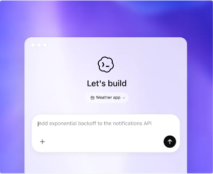
Codex
Cloud/CLI/IDE coding agent để build feature, refactor, migration, test và pull request.
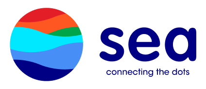
Khi AI không chỉ trả lời, mà bắt đầu làm thay.
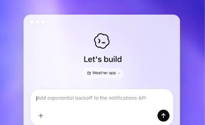
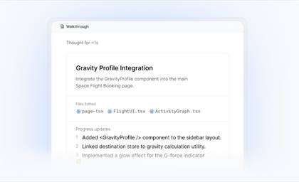
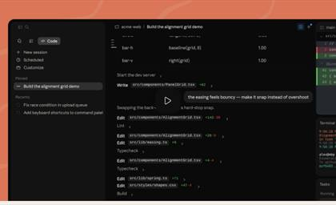
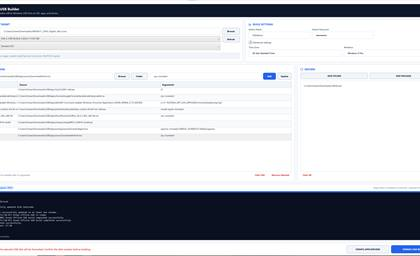
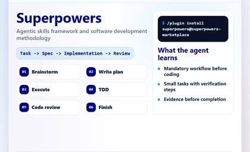
Người đã mở đường, giới thiệu tool và truyền lại kinh nghiệm để mình tiếp cận AI sớm hơn rất nhiều.
Survey nội bộ cho thấy ưu tiên là workflow, prompt và demo thật.
AI đang rời khỏi khung chat để vào workflow có tool-use và governance.
So sánh chatbot với agent, rồi xem các Common AI Agent phổ biến.
How to Prompt, Powerfull Skill, Agentic coding workflow và Guardrails.
Ocean USB Builder: ảnh brainstorm PM, ảnh build app và ảnh cài Windows thật.
Sau demo, chốt lại: nhanh hơn không thay thế phán đoán và điểm dừng.
13 phản hồi từ 07-18/05/2026: 36 lượt chọn chủ đề, 12/13 muốn demo hoặc case thực tế.
Từ chatbot trả lời thông tin sang Agent thực thi công việc tự động.
Tự lập kế hoạch, sử dụng công cụ, đọc hiểu codebase và tạo kết quả thực tế.
Thiết lập brief chi tiết với Goal, Context, Constraints, Checkpoint và DoD.
Tận dụng các platform nội bộ, bảo mật dữ liệu và kiểm soát rủi ro bằng Guardrails.
Model không chỉ thông minh hơn. Chúng bắt đầu đọc file, dùng tool, chạy task dài và cần cơ chế kiểm soát.
Code, research, data, documents, software operation.
Đọc repo -> lập plan -> sửa file -> chạy test -> review diff.
MCP, connector, skill đưa docs, repo, API vào workflow.
Access, approval gate, log, audit, sandbox.
Khác biệt không nằm ở câu trả lời dài hơn, mà ở khả năng lập kế hoạch, dùng công cụ và tự kiểm chứng.
Trả lời từng prompt; người dùng tự làm thủ công qua từng bước.
Nhận mục tiêu, lập plan, chia việc và tự chạy nhiều bước.
Dựa chủ yếu vào đoạn chat hiện tại.
Đọc repo, file, docs, log, tool output và lịch sử task.
Gợi ý lệnh hoặc code để người dùng tự chạy.
Dùng shell, editor, browser, API/connector theo quyền.
Rủi ro thấp hơn vì ít hành động trực tiếp.
Cần sandbox, approval, diff review, log và quyền rõ ràng.
Hôm nay focus vào nhóm agent phổ thông cho builder: đọc repo, lập plan, sửa code, chạy test và tạo artifact thật.
Agent không chỉ trả lời. Nó nhận goal, lấy context, dùng tool trong workspace và trả lại thứ kiểm chứng được.

Cloud/CLI/IDE coding agent để build feature, refactor, migration, test và pull request.
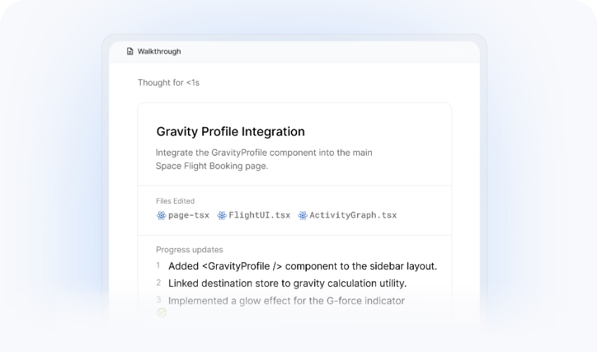
Agent-first development platform: quản lý agent qua workspace, editor, terminal và browser.
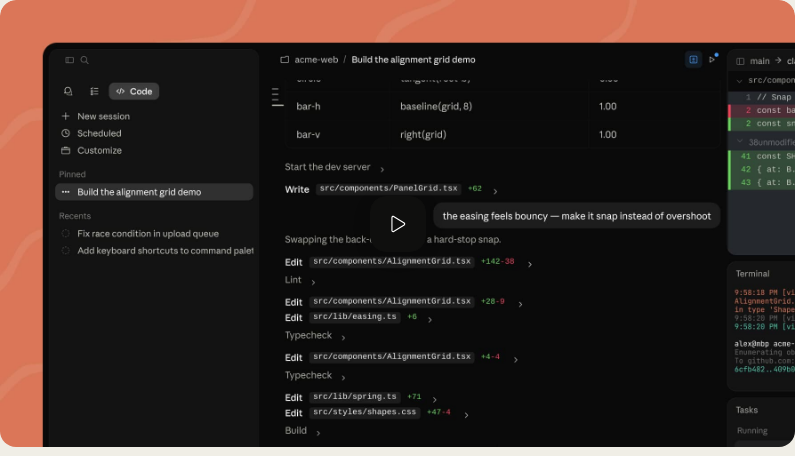
Terminal coding agent đọc codebase, sửa nhiều file, chạy command/test và commit code.
Trong công ty đã có Alpha Intelligence và SMART. Hai platform này đã được giới thiệu từ trước, nhiều người đã thử và đang build trên đó, nên hôm nay mình chỉ đặt vào bản đồ chung.

Phù hợp khi cần dựng agent theo flow, nối nodes/tools và tận dụng knowledge/resources có sẵn trong ecosystem.
Phù hợp khi muốn tạo và quản lý agent trực quan hơn, đặc biệt cho use case nội bộ không cần bắt đầu từ code.
Agent cần nhiệm vụ, quyền hạn, điểm hỏi lại và tiêu chí xong thật.
Kết quả cuối cùng là gì?
Repo, file, business background, dữ liệu đầu vào.
Được dùng shell, browser, editor, API, calendar hay không?
Không được làm gì, giới hạn bảo mật và scope.
Khi nào phải hỏi lại người dùng?
Thế nào là xong: test, diff, docs, link, screenshot?
"Đóng vai senior engineer. Đọc repo, lập plan trước khi sửa. Chỉ chỉnh file liên quan. Không chạy lệnh phá hủy. Sau mỗi batch, chạy verification và báo diff. Xong khi test pass, docs cập nhật và có handover ngắn."
Minh họa từ GitHub/docs công khai: skill là workflow đóng gói, không phải thêm chữ vào prompt.
Skill framework biến AI agent thành workflow có kiểm soát.
Catalog skill theo tech stack, cài được, kiểm tra được, cập nhật được.
Workflow layer gom nhiều skill thành chain có plan, gate và handover.
Agentic skills framework: biến cách AI làm việc thành quy trình có gate, có review và có bằng chứng.
Làm rõ mục tiêu, constraint và trade-off trước khi build.
Chia việc thành task nhỏ, rõ file, rõ test, rõ cách verify.
Chạy theo plan; có thể dùng subagent cho các task độc lập.
Test fail trước, code tối thiểu để pass, rồi refactor.
Review sớm để bắt lỗi spec, bug và debt trước khi lan rộng.
Verify test/build, chọn merge/PR/giữ branch và handover sạch.
Tóm tắt từ README workflow: brainstorm, plan, execute, TDD, review, finish.
Catalog-driven skill loading: phát hiện stack, gợi ý pack, cài bằng CLI, rồi đưa skill phù hợp vào workflow agent.
gsd init đọc project và nhận diện framework/ngôn ngữ.
Catalog map tech stack sang repo skill và skill name cụ thể.
Dùng npx skills add, có thể chọn từng skill hoặc cài cả repo.
Global skill dùng chung; project skill commit cùng repo.
auto, suggest, off kiểm soát mức agent
tự dùng skill.
check và update giúp skill không bị cũ theo thời
gian.
suggest và rules giúp
người vận hành kiểm soát.Tóm tắt từ GSD skills docs: skill directories, install/check/update, onboarding catalog và discovery mode.
Vibe coding framework: một lớp điều phối biến nhiều skill rời rạc thành workflow sản phẩm có memory, profile, dashboard và safety gate.
cm wizard auto-detect AI tools and installs skill profiles.
core, growth, full,
knowledge match skill depth to task.
Planning feeds design, design feeds code, code feeds tests and deploy.
Project context persists so the agent does not restart from zero each session.
Tests, security scan, staging and production gates reduce deploy risk.
cm status and cm dashboard expose tasks, progress,
tokens and logs.
Tóm tắt từ CodyMaster README: 50+ skills, profiles, skill chaining, dashboard, memory và multi-layer safety.
Mỗi vòng chỉ xử lý một batch nhỏ: hiểu việc → sửa có giới hạn → kiểm chứng → người review.
Việc gì, cho ai, output nào?
Scan structure, docs, entrypoints trước khi sửa.
Chốt hướng làm, phạm vi file, rủi ro.
Chỉ sửa một nhóm file liên quan.
Test, syntax, link, render, smoke check.
Accept, reject hoặc yêu cầu sửa tiếp.
Docs, status, next action để người khác tiếp quản.
Agent chạy nhanh; quyền accept vẫn ở con người.
Trong môi trường công ty, tốc độ chỉ có giá trị khi có kiểm soát.
Token, password, webhook, private URL và enrollment payload không được đưa vào AI public.
Dùng dữ liệu giả lập trước. Real data chỉ dùng khi có approval và endpoint phù hợp.
Phải hỏi trước khi xóa file, format disk, deploy, push code, gửi email hoặc gọi API thật.
Task có tác động thật cần log: ai yêu cầu, agent làm gì, verification ra sao.
AI build được app vì bài toán được chia thành mục tiêu, constraint, stack, kiến trúc, verification và điểm dừng.
Chuẩn bị máy mới lặp lại nhiều bước: ISO, USB, drivers, apps, local admin, timezone và log.
Một GUI cho admin, Windows 11 Pro cố định, offline-first, không lộ secret, format USB phải có xác nhận.
.NET 9 WPF cho desktop Windows, PowerShell cho deployment engine, JSON manifest cho app payload.
UI chỉ gom input; engine format/stage; WinPE deploy; post-install cài apps/drivers và ghi log.
Parser check, regression tests, media validation, admin guide, operations runbook và demo SOP.
Ảnh prompt và phần phân tích đầu tiên: bối cảnh, rào cản và các phương án thực thi.
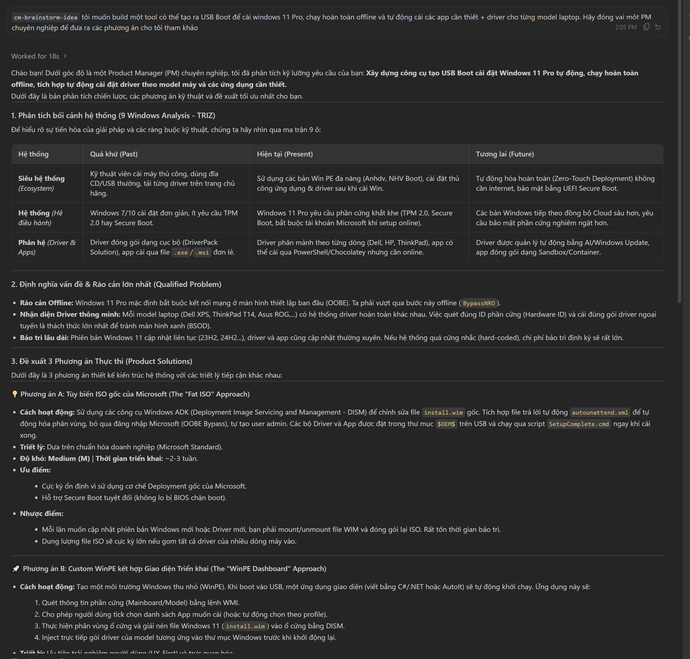
assets/images/ocean-usb-builder-pm-brief-01.png
Ảnh phần chốt: ma trận đánh giá, recommendation và câu hỏi mở để refine requirement.
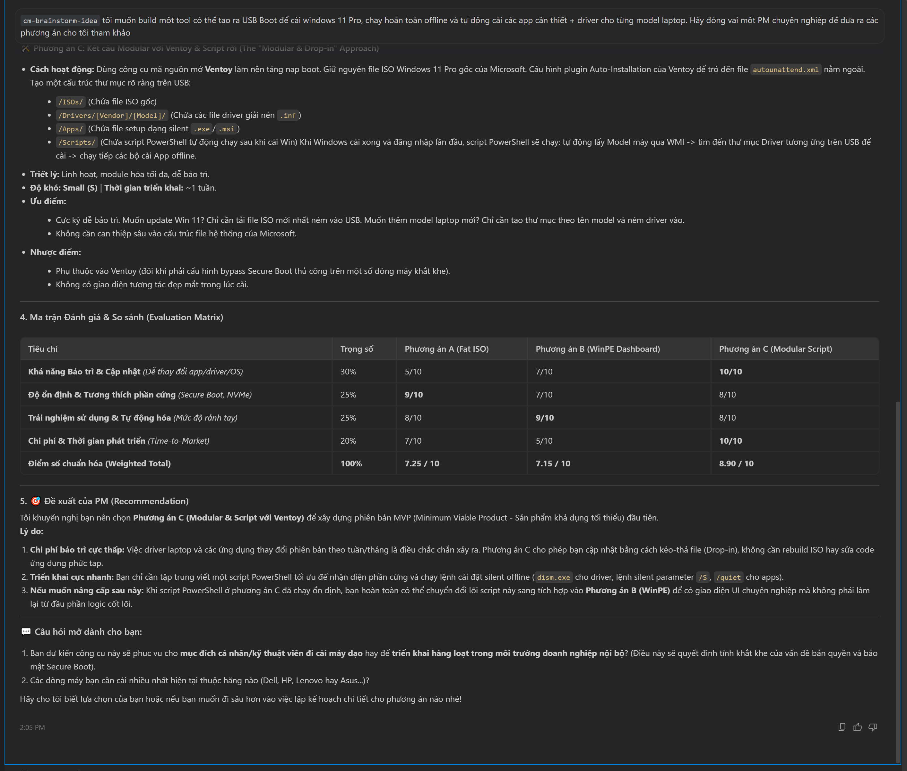
assets/images/ocean-usb-builder-pm-brief-02.png
Ảnh build thật từ OceanUsbBuilder.exe, hiển thị riêng để mọi người nhìn rõ từng chi tiết trong app.
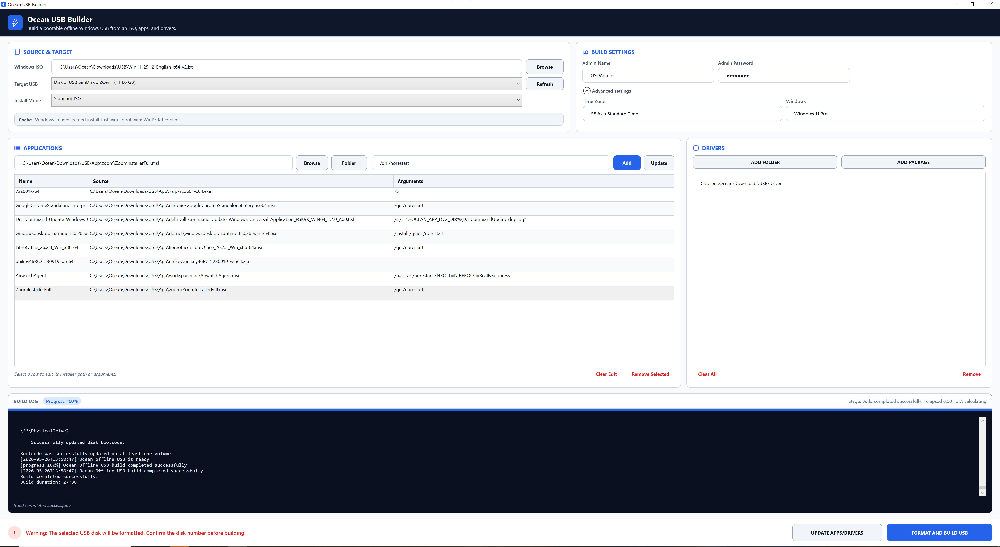
assets/images/ocean-usb-builder-live-build.png
Ảnh thực tế sau khi cắm USB: WinPE deploy, payload sẵn sàng và post-install app.
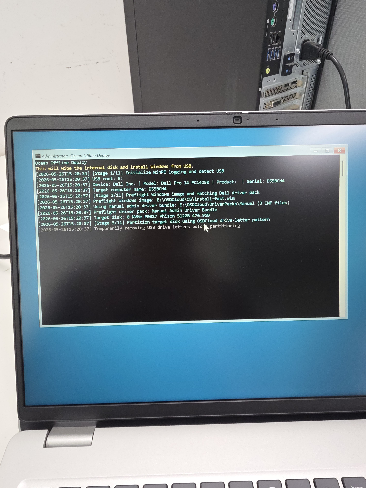
01 · WinPE deployassets/images/ocean-usb-builder-real-install-01.jpeg
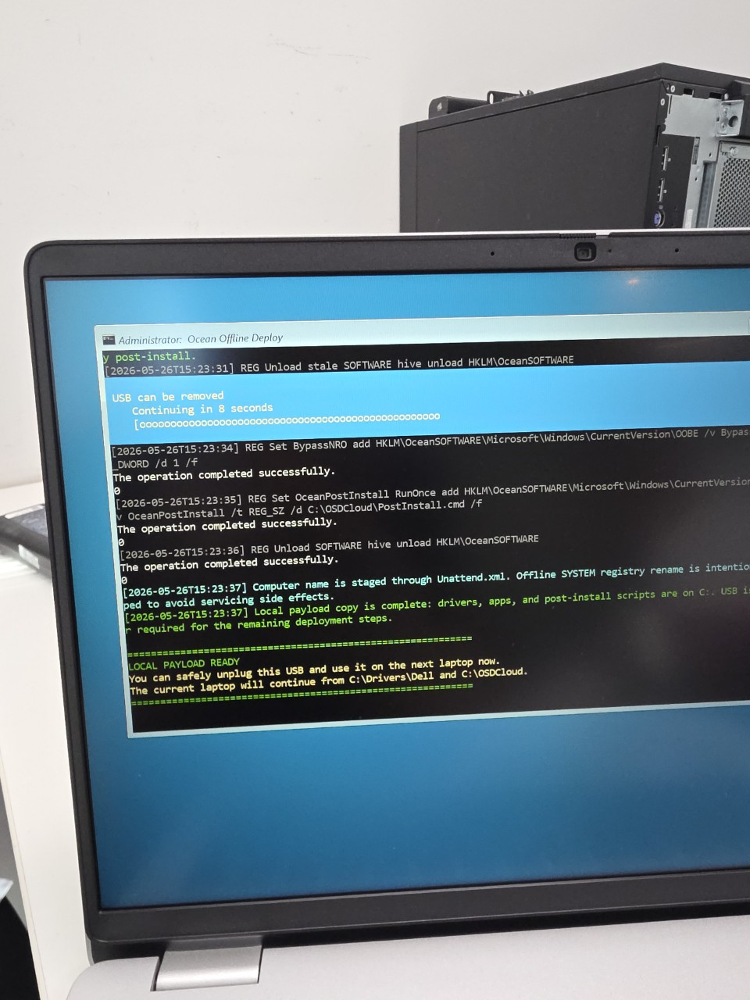
02 · Payload readyassets/images/ocean-usb-builder-real-install-03.jpeg
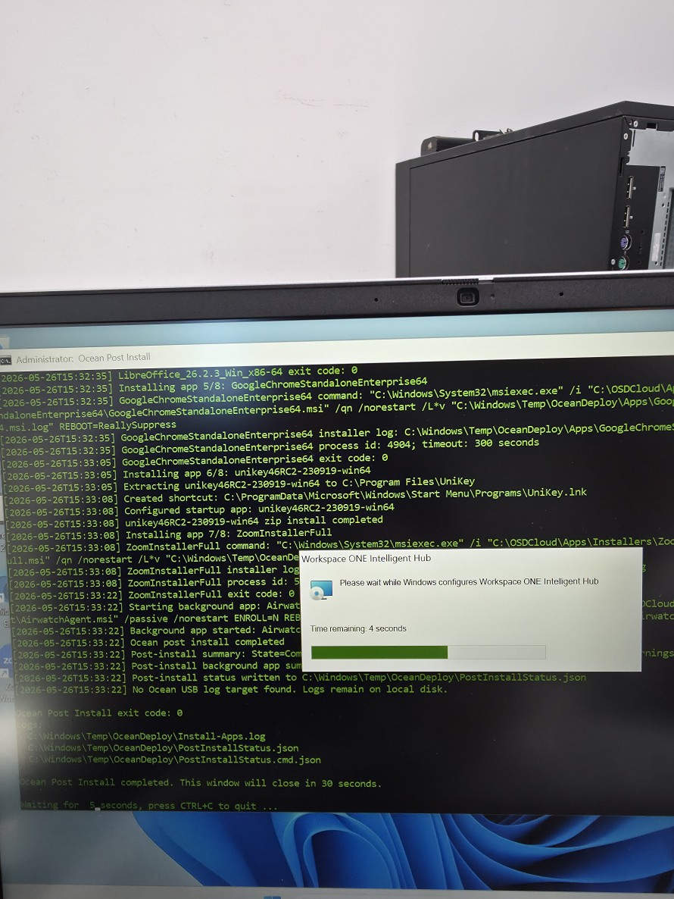
03 · App installassets/images/ocean-usb-builder-real-install-02.jpeg
AI không chỉ làm mình nhanh hơn. Nó còn làm mất những rào cản từng giúp mình biết dừng.
Ta dùng phần thời gian còn lại để nghĩ ra ý tưởng tiếp theo và làm luôn trong đêm.
Jevons paradox for creative energy80% -> 85% chỉ thêm vài phút.
Mỗi output lại gợi thêm việc mới.
Một giờ nghỉ giống như bỏ lỡ một ngày.
Giữ agent, context, output trong đầu.
AI Agent tốt nhất khi con người biết giao việc, kiểm soát và chọn đúng việc đáng làm
Task nào trong team nên thử làm bằng AI Agent trước?
Guardrail nào là bắt buộc nếu agent được dùng trên hệ thống thật?